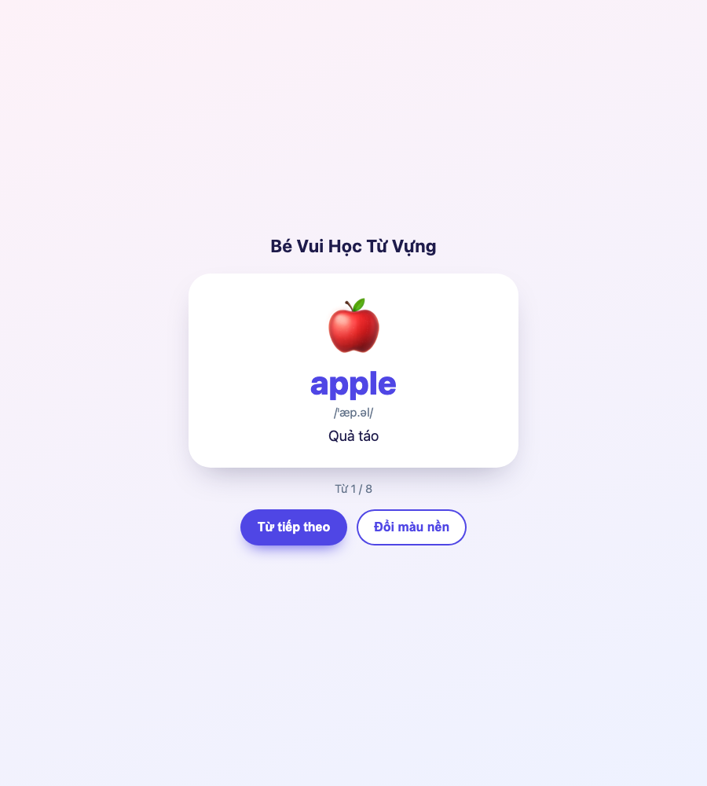
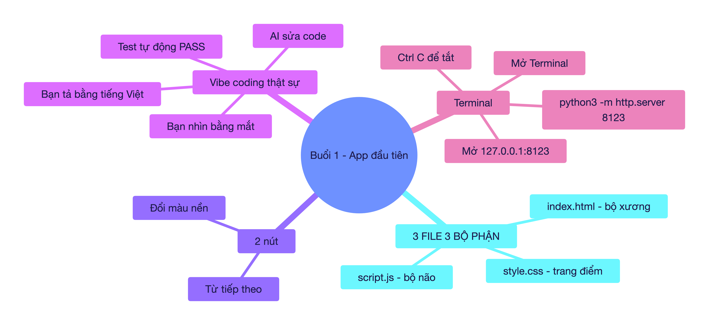
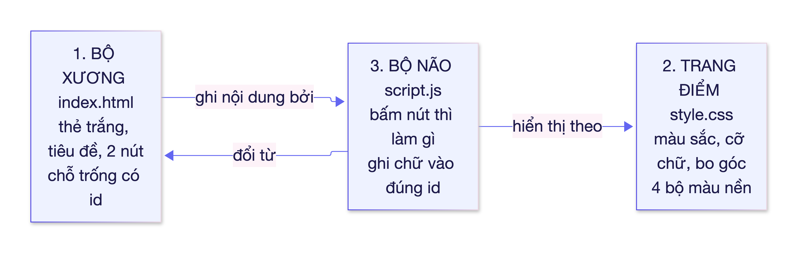
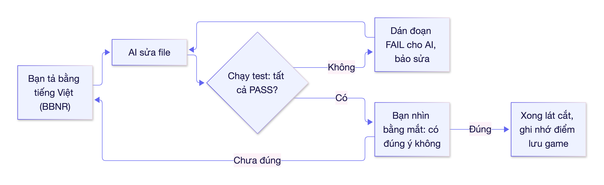
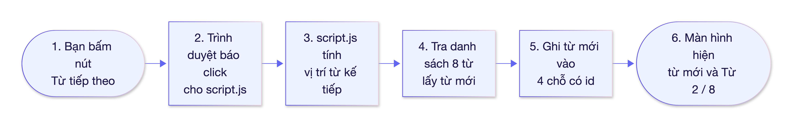

🎓 BUỔI 1 — MỞ CỬA LẦN ĐẦU: APP "BÉ VUI HỌC TỪ VỰNG" ĐÃ CHẠY
Học viên: chưa biết gì về code · Nhịp: 60–90 phút · Dự án:
the-tu-vung-mini(khung số 1, đã dựng sẵn và đã kiểm chứng chạy thật) Kết thúc buổi: bạn mở được app bằng Terminal, hiểu 3 file là 3 bộ phận, và tự làm bài tập BBNR đầu tiên.

Ảnh trên là ảnh chụp thật của app, lấy bằng trình duyệt Chrome tự động ngày 14/11/2026 — không phải hình minh họa.
📍 1. BẢN ĐỒ TRI THỨC TỔNG QUAN (VISUAL MINDMAP)


🌐 1b. BẢN LIVE CÔNG KHAI — WEB HOÀN CHỈNH (Tutor đã triển khai thật — 14/11/2026)
| Trang | Link (bấm được) |
|---|---|
| Trang chủ khoá học (có sơ đồ & bài giảng đẹp) | https://santabu107052.github.io/vibekids-english/khoa-hoc-vibe-coding/ |
| Bài giảng buổi 1 (bản web có sơ đồ màu) | https://santabu107052.github.io/vibekids-english/khoa-hoc-vibe-coding/tai-lieu/buoi-1-mo-terminal-va-3-file.html |
| App khung số 1 | https://santabu107052.github.io/vibekids-english/khoa-hoc-vibe-coding/the-tu-vung-mini/ |
Đã đổi theo yêu cầu của bạn: mọi sơ đồ tư duy (mindmap), sơ đồ luồng (flowchart) trong bài giờ là ảnh PNG nét 2x (bấm vào ảnh trên web để phóng to), không còn khối mã Mermaid phải đọc bằng mắt. Toàn bộ bài học cũng đã thành trang web có mục lục, bảng biểu, nút chuyển bài.
🎯 2. MỤC TIÊU BÀI HỌC
- Kiến thức: biết Terminal là gì; biết mỗi file trong app có nhiệm vụ gì.
- Kỹ năng: tự mở app bằng 1 câu lệnh; tự chạy test bằng 1 câu lệnh; biết đóng app.
- Thái độ: hết sợ Terminal — vì Terminal chỉ là nơi bạn giao việc cho máy bằng chữ.
🧱 3. GIẢNG GIẢI CẶN KẼ TỪNG KHỐI KIẾN THỨC
🔹 Khối 1: Terminal — "cửa khẩu giao việc cho máy"
- Ẩn dụ trực quan: Cửa hàng có 2 kiểu khách: khách bấm chuột (giao diện) và khách đọc đơn hàng bằng giọng nói rõ ràng (Terminal). Các lập trình viên chuyên nghiệp dùng kiểu thứ 2 vì nhanh hơn và máy nào cũng có.
- Định nghĩa chuẩn: Terminal là cửa sổ cho phép bạn gõ câu lệnh (command) bằng chữ để ra lệnh cho máy tính, thay vì bấm chuột.
- Ví dụ cụ thể: gõ
python3 -m http.server 8123nghĩa là hỏi máy: "Bạn Python ơi, làm ơn mở cửa hàng web (http server) ở quầy số 8123 giúp tôi". Máy mở quầy, bạn vào bằng địa chỉhttp://127.0.0.1:8123. - ⚠️ Hiểu sai phổ biến: nghĩ Terminal giống hệt một trang web. Không: Terminal là một chương trình riêng. Trong Terminal bạn gõ tên app (Terminal, được macOS gọi tên là Terminal), không gõ code.
🔹 Khối 2: Ba file = ba bộ phận của một con người
- Ẩn dụ trực quan: một con người = xương + quần áo & trang điểm + bộ não. Thiếu bộ não vẫn nhìn thấy "người" nhưng không biết ai là ai; thiếu xương thì không đứng được.
| Bộ phận | File | Nhiệm vụ | Trong app của mình |
|---|---|---|---|
| Bộ xương | index.html |
Khai báo cái gì có trên trang | 1 thẻ trắng, 2 nút, các chỗ trống: id="tu-tieng-anh" |
| Trang điểm | style.css |
Quyết định đẹp hay xấu | Bo góc tròn, chữ to, 4 bộ màu nền |
| Bộ não | script.js |
Quyết định bấm nút thì chuyện gì xảy ra | "Từ tiếp theo" → sang từ kế, "Đổi màu nền" → đổi màu |
- Định nghĩa chuẩn:
- HTML = ngôn ngữ đánh dấu (HyperText Markup Language) — mô tả các khối nội dung.
- CSS = ngôn ngữ trang trí (Cascading Style Sheets) — mô tả màu, cỡ, vị trí.
- JavaScript = ngôn ngữ lập trình — mô tả hành vi, "khi X thì làm Y".
- Ví dụ cụ thể: file
index.htmlcó dòng<div class="word" id="tu-tieng-anh">apple</div>. Chữappleở đây chỉ là giá trị tạm; ngay khi mở app,script.jssẽ ghi đè bằng từ đúng hơn (apple) và tiếp theo làcat,banana… Vì thế nếu bạn sửa chữappletrong HTML mà không thấy đổi — bình thường, vì bộ não ghi đè lại. - ⚠️ Hiểu sai phổ biến: "Tôi sửa chữ trong HTML mà app không đổi, chắc app hỏng." Không hỏng — bạn đang sửa sai bộ phận: chữ hiển thị do script.js điều khiển (danh sách
BO_TU_MAU). Sửa HTML chỉ hữu ích với thứ không bị JS ghi đè (ví dụ tiêu đề "Bé Vui Học Từ Vựng").
🔹 Khối 3: id — "tên gọi" để bộ não tìm đúng bộ phận
- Ẩn dụ trực quan: Một lớp 40 em đều mặc áo trắng. Cô giáo gọi "Bạn có số báo danh 12" — không gọi "bạn áo trắng ơi" (sẽ 40 em quay lại).
idchính là số báo danh. - Định nghĩa chuẩn:
idlà một thuộc tính HTML gán một định danh duy nhất cho phần tử (element), để code hay CSS tìm đúng phần tử đó. - Ví dụ cụ thể:
index.html: <div id="emoji">🍎</div>
script.js : tim('emoji').textContent = tu.emoji; // ghi vào đúng chỗ đó
Đổi tên id ở file này mà không đổi ở file kia → bộ não gõ cửa "phòng có số báo danh emoji" và không ai trả lời → nút bấm không làm gì. Đây là lỗi số 1 của người mới dùng vibe coding.
- ⚠️ Hiểu sai phổ biến: nghĩ
class(dùng ởstyle.css:.card,.btn) vàid(dùng ởscript.js:tim('emoji')) là một thứ. Không:classlà nhóm (nhiều phần tử dùng chung 1 kiểu, ví dụ mọi nút),idlà duy nhất (chỉ 1 phần tử).
🔹 Khối 4: Test — "người gác cổng" cho phép bạn sửa code mà không sợ
- Ẩn dụ trực quan: Bạn cải tạo nhà. Trước khi làm xong, người gác cổng lần lượt bật từng công tắc trong nhà để chắc "công tắc nào cũng bật được". Có test, bạn được phép bấm, sửa, làm hỏng thử — vì gác cổng sẽ báo ngay.
- Định nghĩa chuẩn: Test (kiểm thử) là đoạn code tự động chạy thử tính năng và trả về PASS/FAIL. Chạy lại test sau mỗi lần sửa để chắc không làm hỏng chức năng cũ gọi là kiểm thử hồi quy (regression testing).
- Ví dụ cụ thể: dự án có 10 test. Hôm nay AI sửa nút "Từ tiếp theo" và làm hỏng luật quay vòng → test thứ 9 (
bấm đủ 8 lần thì vòng lại từ đầu) chuyển sang FAIL. Bạn copy dòng FAIL dán cho AI — "sửa cho test này PASS". AI có mục tiêu cụ thể, không đoán mò. - ⚠️ Hiểu sai phổ biến: "Test PASS nghĩa là app đẹp, đúng ý." Sai. Test chỉ kiểm chức năng (bấm ra gì), không kiểm thẩm mỹ. Vẫn phải tự nhìn bằng mắt.
🔹 Khối 5: Vibe coding thật sự — 4 bước, không phải 1 bước
Người mới thường nghĩ: "Tả cho AI → AI code → xong". Đó là 1 bước, và là cách nhanh nhất để có một app chạy được nhưng sai.

🛠️ 4. TRỰC QUAN HÓA CƠ CHẾ: ĐIỀU GÌ XẢY RA KHI BẠN BẤM "TỪ TIẾP THEO"

📊 5. BẢNG SO SÁNH — 3 FILE DỄ NHẦM
| Tiêu chí | index.html |
style.css |
script.js |
|---|---|---|---|
| Trả lời câu hỏi | Có gì trên trang? | Trông thế nào? | Làm gì khi bấm? |
| Đơn vị cơ bản | Thẻ (element) như <div>, <button> |
Quy tắc (rule) như .btn { } |
Hàm (function) như mauTiepTheo() |
| Người mới sửa khi muốn… | Đổi tiêu đề, thêm 1 nút | Đổi màu, cỡ chữ, bo góc | Thêm quy tắc, thêm từ vựng |
| Sửa sai file sẽ… | Lỗi hiển thị / mất nút | Không hỏng chức năng | Phá chức năng nhưng vẫn "đẹp" |
| Ai kiểm được? | Bạn nhìn | Bạn nhìn | Test tự động |
🎯 6. BÀI TẬP THỰC HÀNH BẮT BUỘC (làm ngay trong buổi)
Bước A — Mở app (5 phút)
- Mở Terminal (search "Terminal" trong Spotlight ➔ Enter).
- Gõ từng dòng dưới đây rồi Enter:
cd /Users/santabu/Documents/deepseek-harness/default-workspace/english-for-kids/khoa-hoc-vibe-coding/the-tu-vung-mini
python3 -m http.server 8123
- Terminal sẽ đứng im (không có dòng mới). Đó là BÌNH THƯỜNG — Terminal đang "trực quầy".
- Mở Chrome ➔ dán vào thanh địa chỉ:
http://127.0.0.1:8123 - Bấm "Từ tiếp theo" 3 lần (phải thấy
cat→banana→dog), bấm "Đổi màu nền" 2 lần. - Xong thì quay lại Terminal bấm Ctrl + C để tắt.
⚠️ Nếu ở bước 3 Terminal in ra dòng đỏ
Address already in use— nghĩa là quầy 8123 đã bị chiếm. Đổi số:python3 -m http.server 8124và mở127.0.0.1:8124.
Bước B — Chạy test (2 phút)
Trong Terminal, Ctrl + C trước cho sạch, rồi gõ:
cd /Users/santabu/Documents/deepseek-harness/default-workspace/english-for-kids/khoa-hoc-vibe-coding/the-tu-vung-mini
node --test test/khoa-hoc.test.mjs
Bạn phải thấy pass 10 / fail 0. Con số 10 này là vạch mốc của bạn: mọi lần sửa code sau, test phải vẫn 10/10 mới được coi là "chưa làm hỏng gì".
Bước C — Bài tập vibe coding ĐẦU TIÊN (10 phút)
Yêu cầu: thêm 1 nút thứ ba tên "Quay lại từ trước", bấm thì lùi 1 từ; đang ở từ đầu thì nhảy về từ cuối (ngược của "Từ tiếp theo").
Nhưng — bạn chưa tự viết code. Bạn viết prompt BBNR rồi dán vào ô chat với tôi. Tôi sẽ sửa code chạy thật, sau đó bạn chạy lại test và tự bấm thử.
Khuôn mẫu để bạn điền (copy khuôn này, sửa chỗ ngoặc vuông):
B — Bối cảnh: Dự án nhỏ ở thư mục khoa-hoc-vibe-coding/the-tu-vung-mini
gồm index.html, style.css, script.js và test/khoa-hoc.test.mjs (10 test đang PASS).
V — Việc: Thêm nút thứ ba "Quay lại từ trước" cạnh 2 nút hiện có. Bấm thì hiện từ
phía trước; đang ở từ đầu (Từ 1/8) thì nhảy về từ cuối (Từ 8/8).
N — Ràng buộc: Không đổi giao diện hiện tại, không đổi màu, không xoá nút cũ.
Nút mới dùng cùng kiểu .btn như nút "Đổi màu nền".
Thêm hàm thuần `timViTriTruoc(viTriHienTai, tongSoTu)` trong script.js.
R — Nghiệm thu: Thêm 3 test mới (bình thường / từ đầu nhảy về cuối / dữ liệu rác).
Chạy `node --test test/khoa-hoc.test.mjs` phải ra pass 13, fail 0.
Bấm thử trên trình duyệt: từ apple ➔ quay lại thì ra rice (Từ 8/8).
Nộp bài: dán prompt vừa điền vào chat. Tôi sẽ làm đúng vai AI code (như bạn sẽ làm với AI khác), rồi bạn chạy node --test để tự nghiệm thu.
🎯 7. TỰ KIỂM TRA HIỂU BÀI (CHECK FOR UNDERSTANDING)
- Câu hỏi 1: Bạn muốn đổi tiêu đề "Bé Vui Học Từ Vựng" thành "Bé Học Từ Vựng Vui" — sửa file nào?
- Câu hỏi 2: Bạn muốn app đẹp hơn: từ to hơn, thẻ bo tròn hơn — sửa file nào?
- Câu hỏi 3: Bạn sửa chữ
appletrongindex.htmlthànhAPPLEnhưng mở app vẫn thấyapple— hỏng hay không hỏng? Vì sao? - Câu hỏi 4: Terminal đang ở trạng thái "đứng im" sau khi gõ
python3 -m http.server 8123, có cần bấm gì tiếp không?
💡 Xem gợi ý đáp án
index.html(tiêu đề không bị bộ não ghi đè).style.css.- Không hỏng.
script.jschạy sau và ghi đè chữ bằng dữ liệu trongBO_TU_MAU. - Không. "Đứng im" = đang chạy. Bấm Ctrl + C khi muốn tắt.
📌 8. LỘ TRÌNH ÔN TẬP & BƯỚC TIẾP THEO
- 🗓️ Ôn 1 (sau 1 ngày): mở app bằng 2 dòng lệnh không nhìn lại bài. Nếu quên → xem lại Bước A.
- 🗓️ Ôn 2 (sau 3 ngày): giải thích bằng lời: "HTML là xương, CSS là áo, JS là não" +
idlà số báo danh. - 🗓️ Ôn 3 (sau 7 ngày): chạy test và nói được vì sao
pass 10quan trọng hơn "trông đẹp". - 🚀 Bước tiếp theo: hoàn thành Bài tập 6.C → Buổi 2: Bản đồ dự án VibeKids (đọc
App.tsx,curatedWords.ts,package.jsonvà hiểu vì sao bấm "Từ tiếp theo" trong VibeKids lại phức tạp hơn trong app của mình). - 🃏 Thẻ ôn tập:
../the-on-tap/bo-the-on-tap-buoi-1.txt(import Anki: File ➔ Import).
📎 PHỤ LỤC — 5 câu lệnh bạn dùng suốt khóa
| Việc | Câu lệnh |
|---|---|
| Vào thư mục dự án | cd /duong/dan/thu-muc |
| Mở app học (khung số 1) | python3 -m http.server 8123 → mở http://127.0.0.1:8123 |
| Chạy test | node --test test/khoa-hoc.test.mjs |
| Tắt app | Ctrl + C |
| Xem mình đang ở đâu | pwd |